Capítulo 4 Registro no SIAFI
Com todos os passos anteriores feitos, o técnico do NGO registra a Minuta do decreto no SIAFI-MG conforme apresentado a seguir.
- Faça o login no SIAFI-MG
- Selecione opção (03): Movimentação Orçamentaria
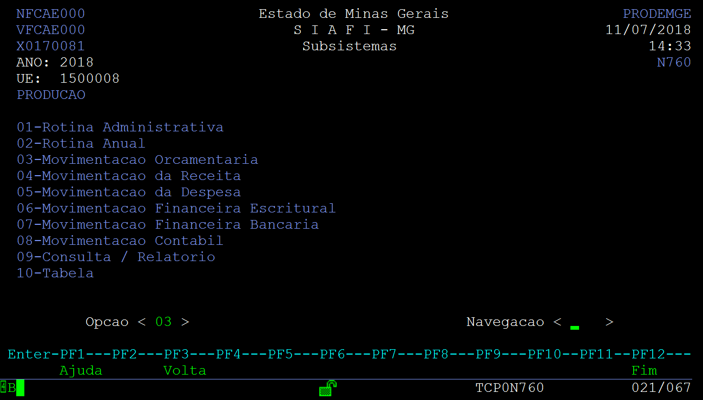
- Selcione opção (01): Alteração Orçamentaria
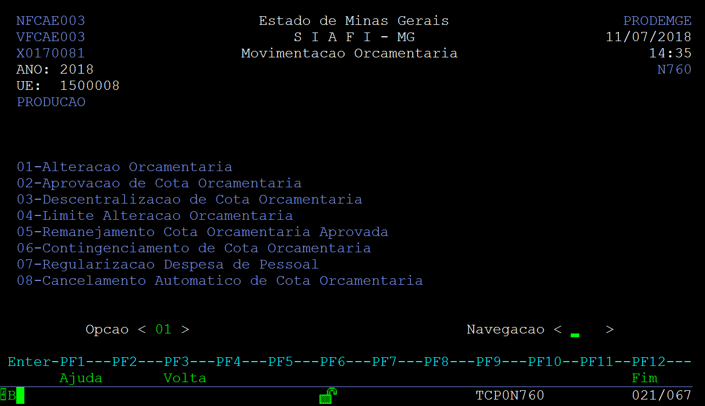
- Selecione opção (03): Minuta de decreto Orçamentario; Ação (1): Registro
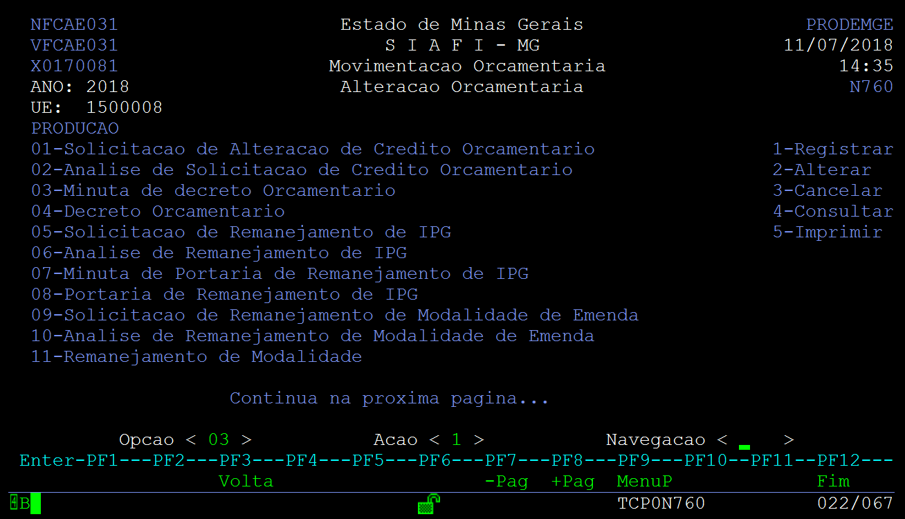
- Tecle X em Minuta de Decreto
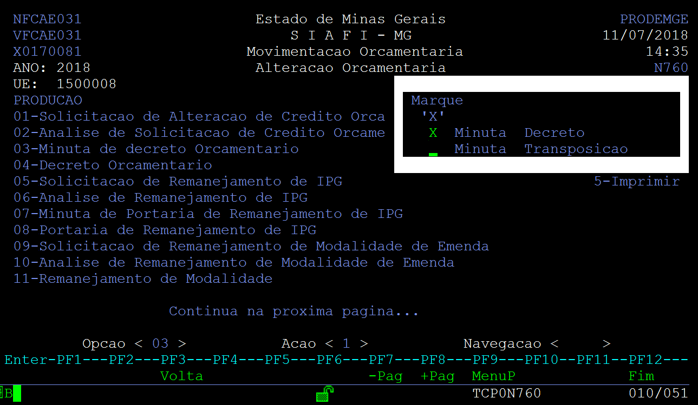
- Tecle (01) em Tipo de Crédito
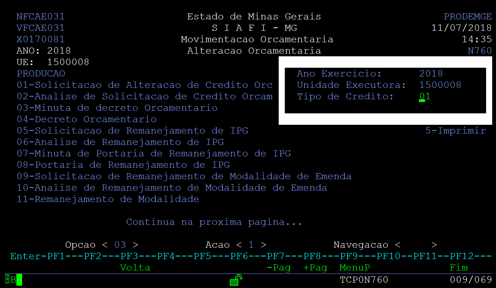
- Selecioe as Solicitações Autorizadas disponíveis na pasta Solicitações Autorizadas.
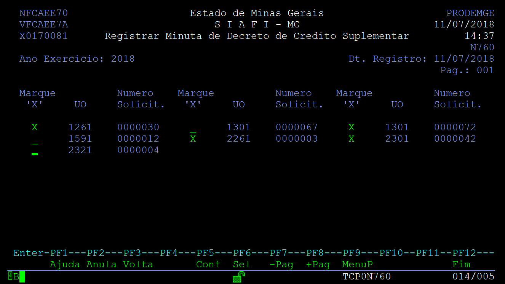
- Compara se o Total da Suplementação esta igual a da nota do SISOR, caso esteja igual registre as OC
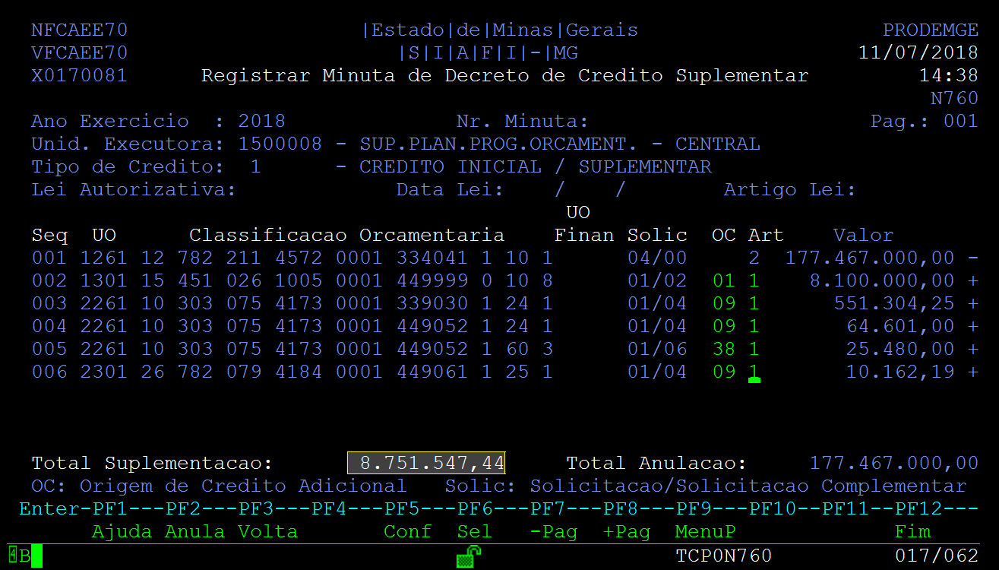
- Tecle Enter e preencha a tela que aparece, em seguida tecle F5 e depois F5 para confirmar o registro.
4.1 Gerar Anexo para o Decreto
- Tecle F3 para retornar a tela. Insira Opção (03), Ação (05).
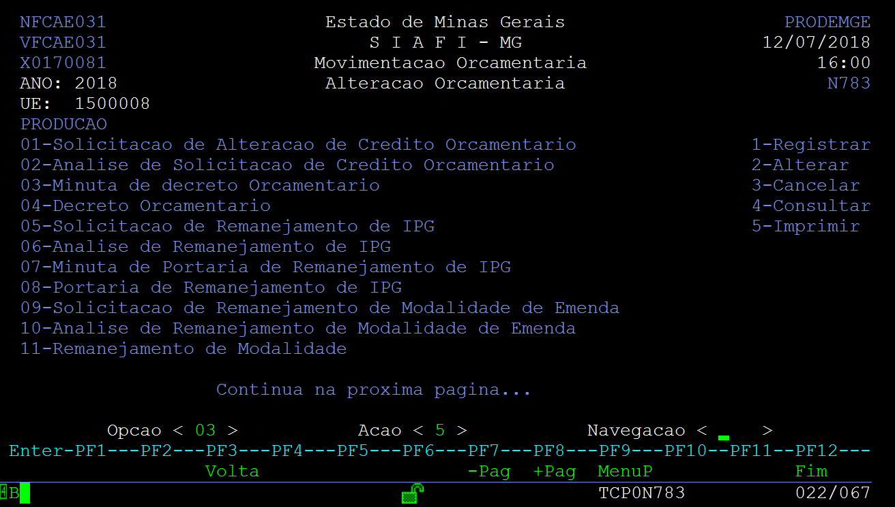
- Marque um X em Minuta em Arquivo p/FTP
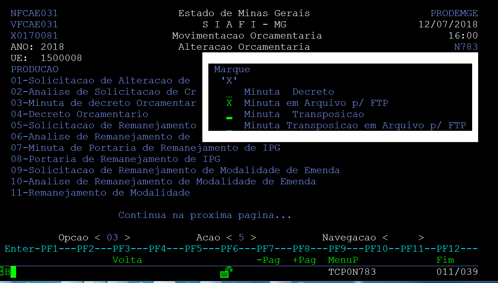
- Insira o número da Minuta
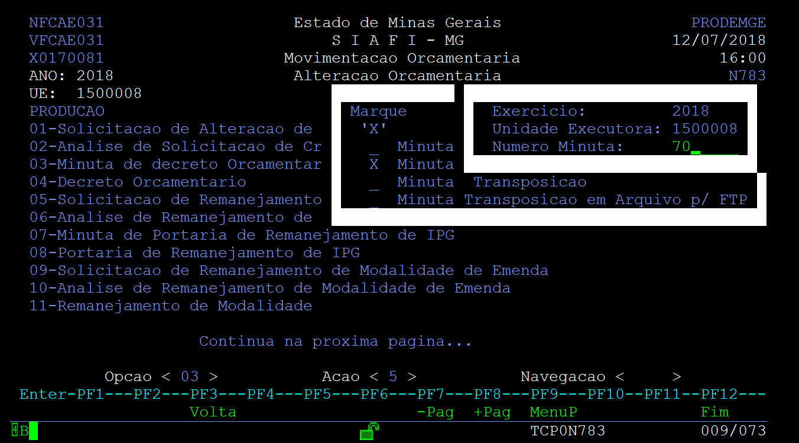
- Tecle ENTER e em seguida F5
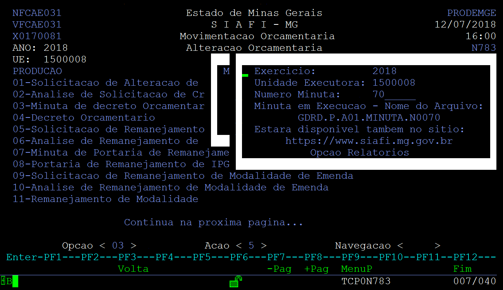